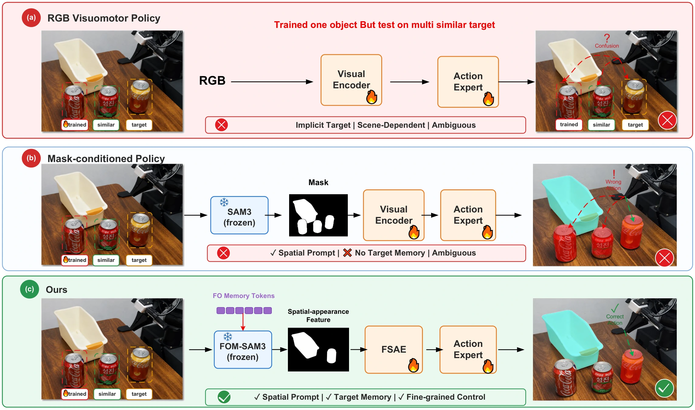
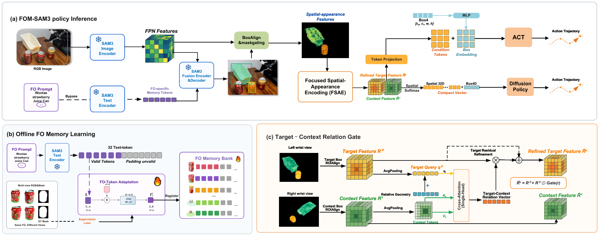
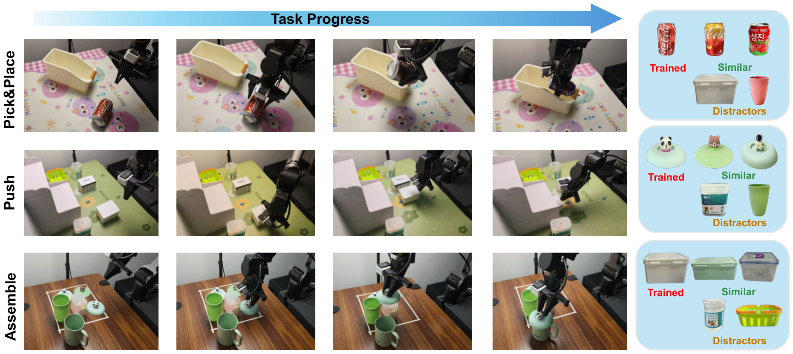
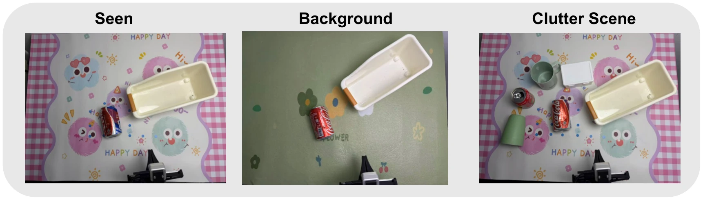
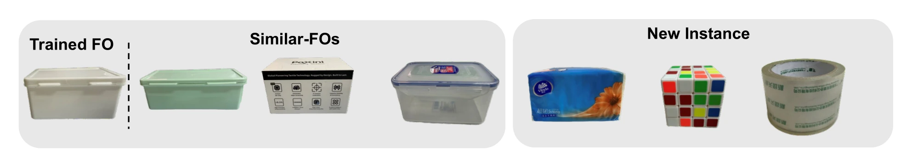
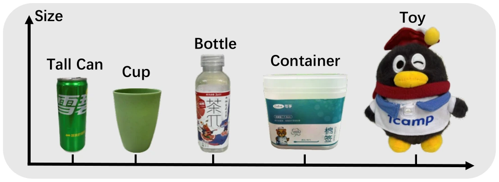
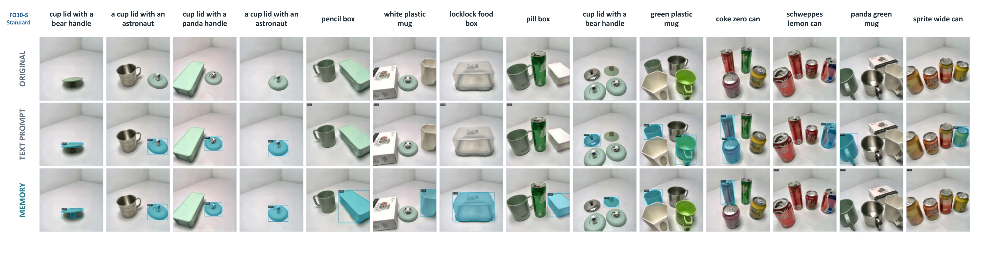
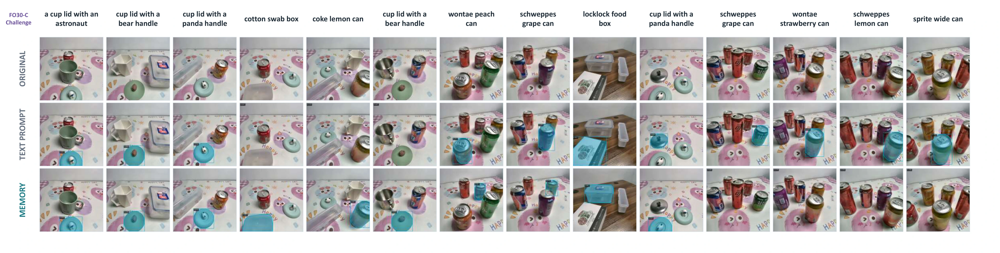

Dataset
FO30 contains 30 physical objects from four coarse categories. FO30-S contains 600 standard test images and 18,000 image-FO queries; FO30-C contains 400 harder images, 12,000 queries, and more Similar-FO co-occurrence.
Anonymous Institution
Selected rollouts · Full gallery below
Realistic manipulation scenes can contain multiple visually similar objects from the same category. The central challenge is to preserve an existing manipulation skill while enabling the robot to identify and operate a user-specified object among similar candidates.



| Method | ID | OOD-Distractors | OOD-Similar | ||||||
|---|---|---|---|---|---|---|---|---|---|
| Pick&Place | Push | Assemble | Pick&Place | Push | Assemble | Pick&Place | Push | Assemble | |
FO Memory and FSAE improve robustness under visual interference. All methods learn the basic skills under ID. Under OOD-Similar, Ours-DP reaches 10/10 on all three tasks, while RGB-DP obtains 1/10, 3/10, and 0/10. Ours-ACT reaches 8/10, 9/10, and 7/10, compared with 0/10, 5/10, and 1/10 for RGB-ACT. Explicit target identity and focused visual conditions reduce wrong-object execution while preserving the learned manipulation skills.
FO30 contains 30 physical objects from four coarse categories. FO30-S contains 600 standard test images and 18,000 image-FO queries; FO30-C contains 400 harder images, 12,000 queries, and more Similar-FO co-occurrence.
SAM3 Text Prompt, Text-Token Optimization, PTSAM, M2C, and FO Memory Learning share the same frozen-SAM3 protocol. Evaluation reports cgF1, pmF1, IL-MCC, and Joint FPR.
| Method | cgF1 ↑ | pmF1 ↑ | IL-MCC ↑ | Joint FPR ↓ |
|---|---|---|---|---|
| FO30-S · Standard | ||||
| SAM3 Text Prompt | 24.30 | 73.57 | 0.3304 | 18.96 |
| Text-Token Optimization | 35.87 | 81.49 | 0.4403 | 17.19 |
| PTSAM | 26.30 | 73.37 | 0.3585 | 15.75 |
| M2C | 35.82 | 81.53 | 0.4394 | 17.26 |
| FO Memory Learning (Ours) | 62.38 | 93.56 | 0.6668 | 6.85 |
| FO30-C · Challenge | ||||
| SAM3 Text Prompt | 20.34 | 55.89 | 0.3641 | 14.42 |
| Text-Token Optimization | 29.41 | 62.76 | 0.4687 | 13.06 |
| PTSAM | 20.82 | 56.00 | 0.3718 | 12.63 |
| M2C | 29.77 | 62.95 | 0.4729 | 13.10 |
| FO Memory Learning (Ours) | 55.98 | 85.42 | 0.6554 | 7.60 |
FO perception results. SAM3 Text Prompt, Text-Token Optimization, PTSAM, M2C, and FO Memory Learning use the same frozen SAM3, test data, thresholds, NMS, and evaluator. FO Memory Learning achieves the strongest result on both FO30 test sets. On FO30-S, cgF1 and pmF1 improve by 26.51 and 12.03 points; on FO30-C, they improve by 26.21 and 22.47 points. Joint FPR decreases to 6.85% on FO30-S and 7.60% on FO30-C. Up arrows indicate higher values are better, and the down arrow indicates lower values are better.
Preloaded FO Memory Tokens reduce localization latency. The mean runtime falls from 48.18 ms to 43.26 ms, a 4.92 ms reduction, because the memory route skips online text encoding.
| Method | Single Similar-FO | Multiple Similar-FOs |
|---|---|---|
| SAM3 Text Prompt | 2/10 | 0/10 |
| FOM-SAM3 | 10/10 | 8/10 |
FOM-SAM3 preserves fine-grained identity when the target is absent. It raises rejection from 2/10 to 10/10 with one Similar-FO and from 0/10 to 8/10 with multiple Similar-FOs. FO Memory constrains matching to the registered identity, suppressing semantically similar candidates and preventing execution on the wrong object.
| Visual Condition | Pick & Place | Push | Assemble |
|---|---|---|---|
| RGB Feature (ResNet) | 6/10 | 3/10 | 5/10 |
| Mask-guided RGB (ResNet) | 8/10 | 6/10 | 5/10 |
| SAM3 Object Feature w/o TCRE | 10/10 | 7/10 | 8/10 |
| FSAE (Ours) | 10/10 | 8/10 | 10/10 |
FSAE gives the strongest result across all three tasks. Object-centric conditions progressively improve robustness over full-image RGB features. Compared with SAM3 object features alone, FSAE retains 10/10 on Pick & Place and improves Push from 7/10 to 8/10 and Assemble from 8/10 to 10/10 by modeling target appearance, manipulation context, and relative geometry.
| Method | Seen | Background | Clutter |
|---|---|---|---|
| RGB-DP | 8/10 | 5/10 | 0/10 |
| Mask-DP | 10/10 | 10/10 | 2/10 |
| Ours-DP | 10/10 | 10/10 | 9/10 |
FO-specific conditions maintain performance as the scene changes. Ours-DP preserves 10/10 on the unseen background and reaches 9/10 in clutter, compared with 5/10 and 0/10 for RGB-DP and 10/10 and 2/10 for Mask-DP. The identity-aware representation keeps the policy focused on the target under environmental appearance changes.
| Method | Pick & Place | Push | Assemble |
|---|---|---|---|
| Ours-DP | 10/10 | 10/10 | 8/10 |
| Ours-ACT | 7/10 | 8/10 | 8/10 |
FO Memory extends frozen skills to newly registered Similar-FOs. Replacing only the retrieved FO Memory Tokens allows both DP and ACT to manipulate unseen target objects without new demonstrations or policy updates, expanding the reachable target set while preserving the learned interaction skills.
Visual evidence



New-FO reuse changes the retrieved FO Memory Tokens and evaluates frozen-skill transfer across tested objects with compatible interaction geometry.
Qualitative results · FO30


Latest paper and current project material.
Replace the anonymous metadata after acceptance or public release, then update README and all project links in the same change.